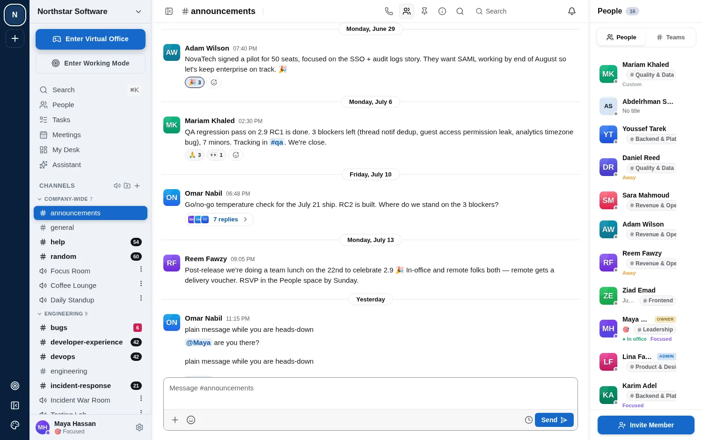

Features / Voice rooms
Voice rooms
WebDiscord-style voice channels: click one to join, see who else is in it, and talk — no calendar invite required for a two-minute question.

Discord-style voice channels: click one to join, see who else is in it, and talk — no calendar invite required for a two-minute question.
